Visual planning before construction starts
Renderings and project visualization help clients understand scale, scope, and finish direction early.
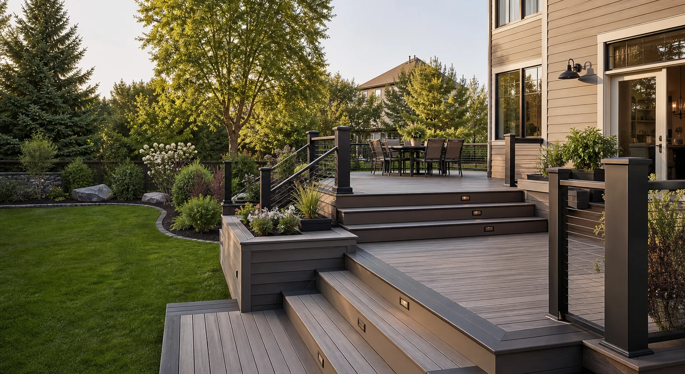
INEX Studio Build · Design · Remodel · Build
Modern construction, remodeling, and project visualization support for homes and small commercial spaces across the Southeast.
From 3D renderings and permit coordination to repairs, decks, remodeling, and full build services, we help clients visualize the project clearly before construction starts.
About INEX Studio Build
INEX Studio Build is a full-service construction and design-support company specializing in residential and small commercial projects. Our capabilities include 3D modeling, high-end project renderings, permitting assistance, drawing coordination, repairs, remodeling, restoration, and full construction/build services.
Based in Charlotte, NC, we serve select projects across NC, SC, GA, and VA. From concept development and visualization to permit coordination and final construction, we help clients plan, understand, and complete projects with clear communication and reliable execution.
Services
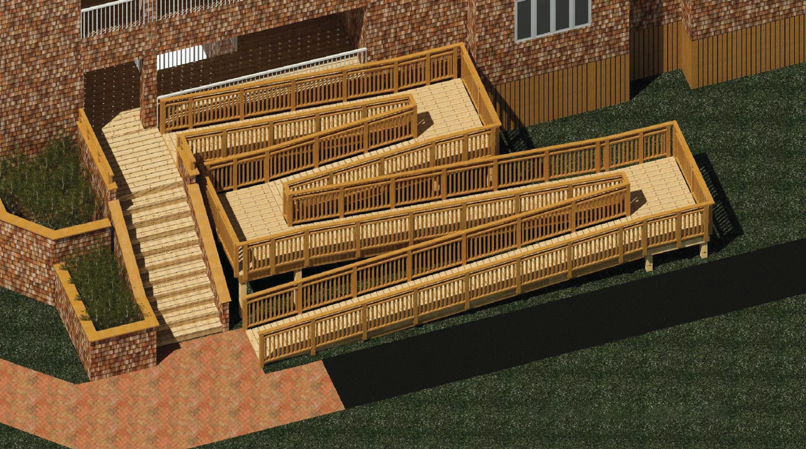
Visual planning to make layout, scope, and finish decisions easier before work begins.
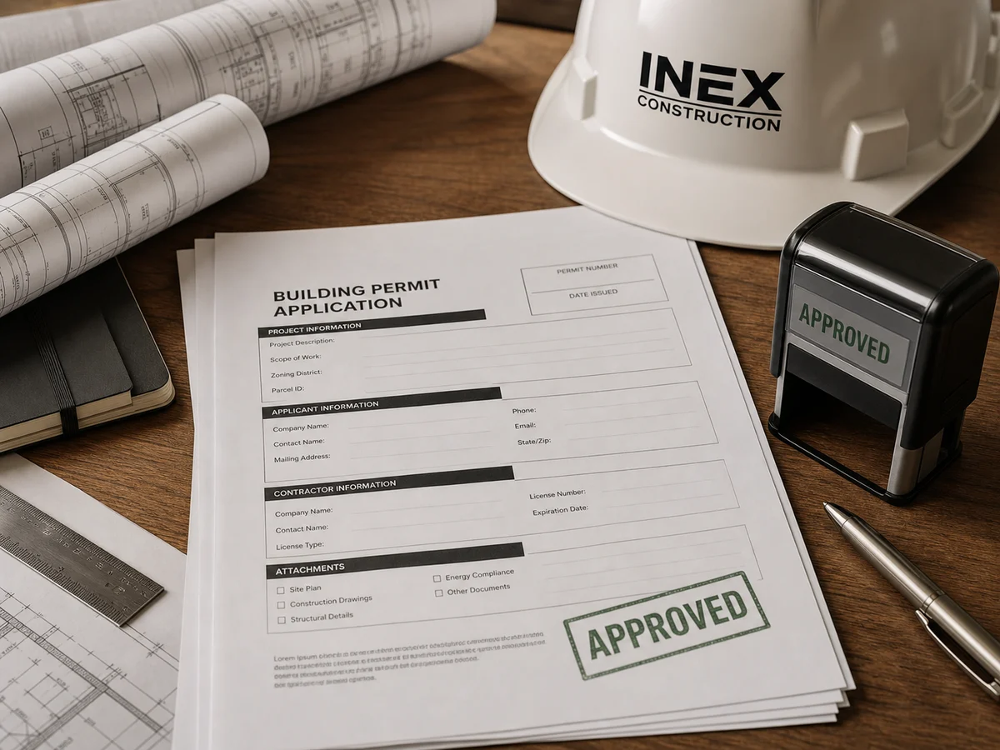
Permit support, drawing coordination, and coordination with licensed professionals when required.
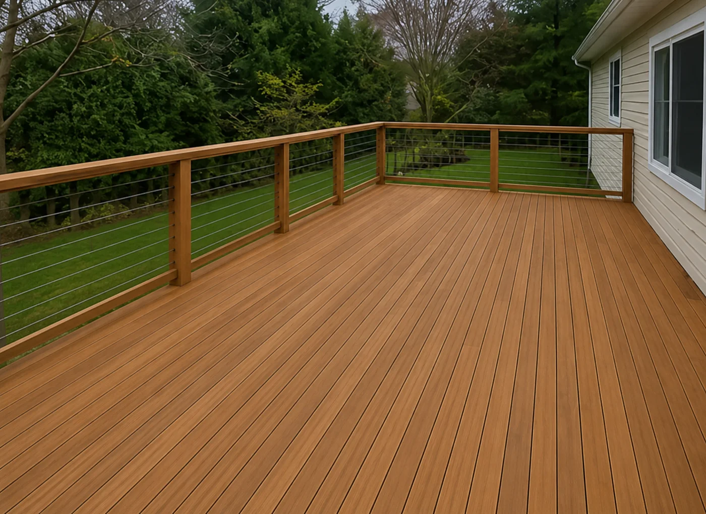
Practical repairs and upgrades that improve appearance, durability, and day-to-day use.
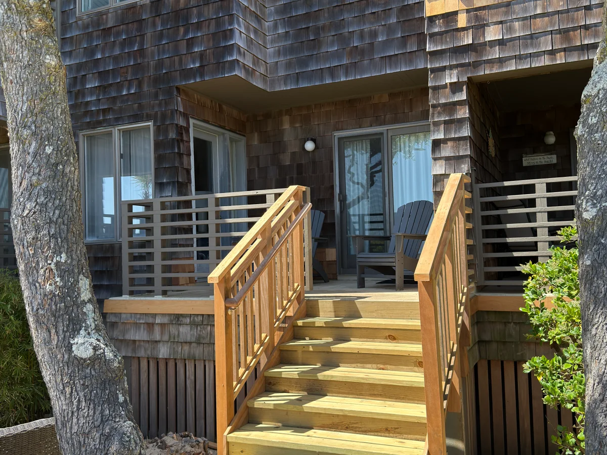
Remodeling, renovations, and construction execution for homes and small commercial spaces.
Why Choose Us
Renderings and project visualization help clients understand scale, scope, and finish direction early.
We help define materials, schedule, site needs, and next steps so projects move with fewer surprises.
Renderings, permits, repairs, remodeling, and build services can be coordinated through one construction-focused team.
Based in Charlotte, we bring a modern and detail-oriented approach to homes and small commercial spaces.
How It Works
Send photos, ideas, drawings, or a short description.
We help identify what is needed: visualization, permit support, repairs, remodeling, or construction.
Scope, materials, coordination, schedule, and next steps.
From small repairs to remodeling and construction execution.
Visualization Support
Renderings help clients review scale, layout, access, and finish direction before the work begins. They also make coordination conversations clearer and more productive.
Explore Renderings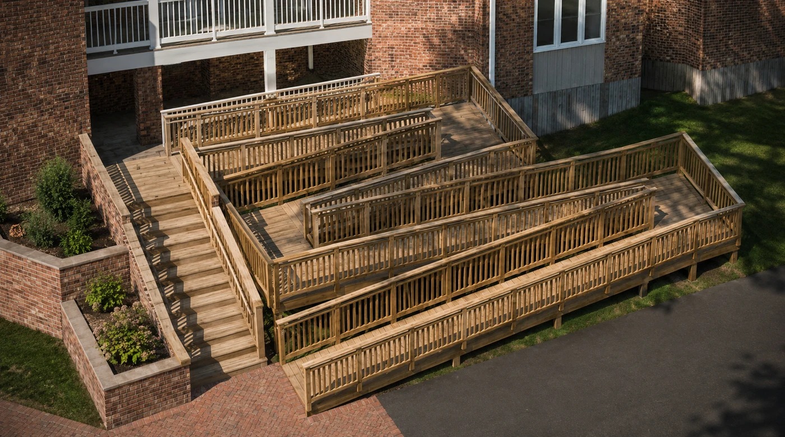
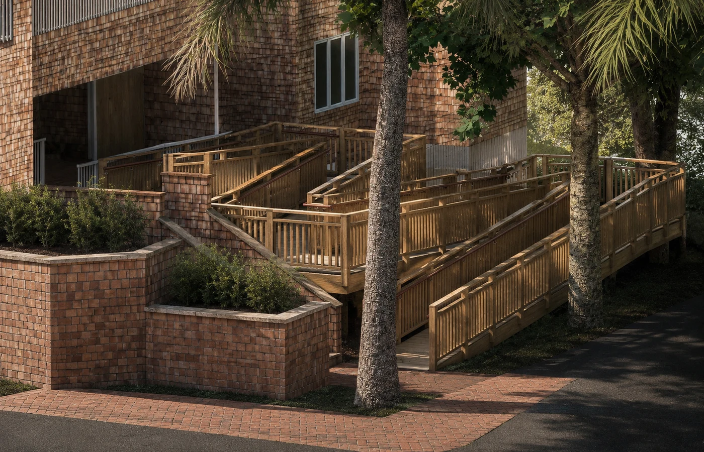
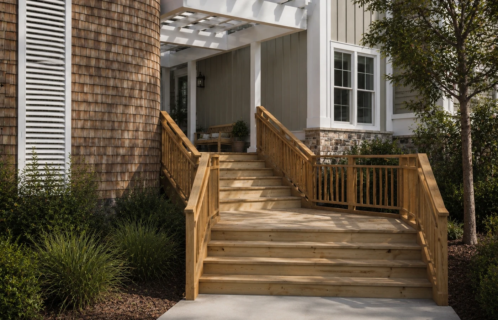
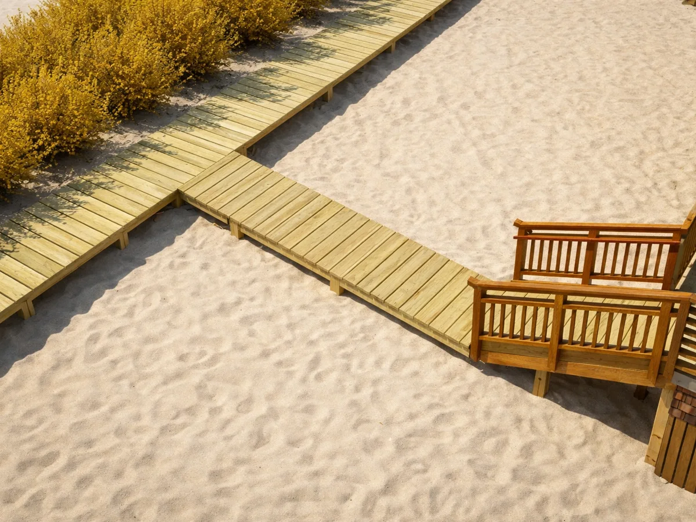
Our Work
Before-and-after examples show how practical repairs, exterior upgrades, and construction details can change the way a project looks and performs.
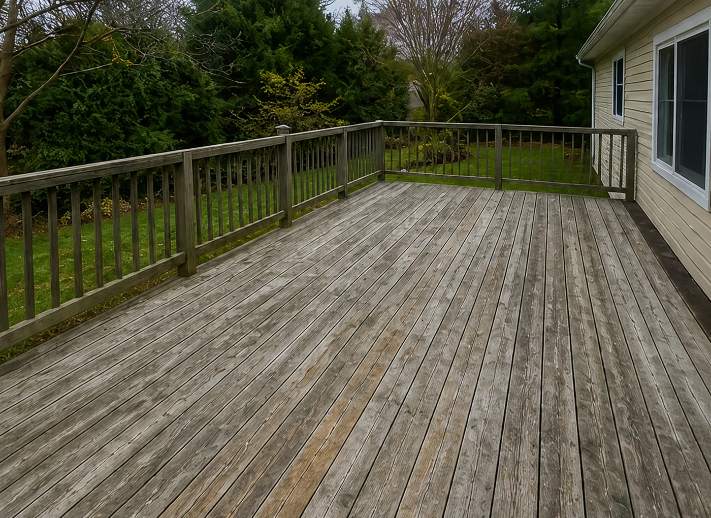
Old deck surface repaired and refinished to improve appearance, durability, and long-term use.
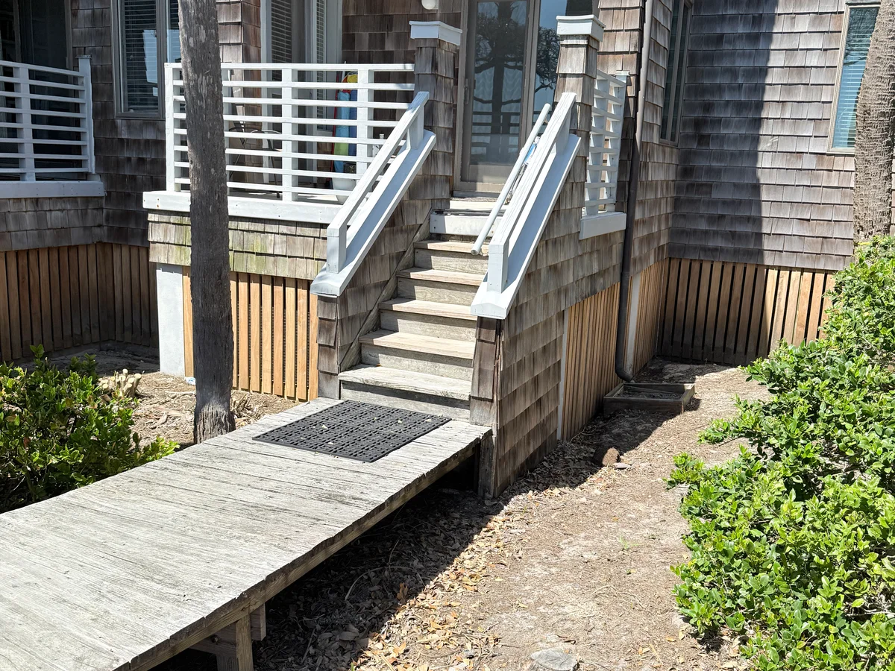
Exterior access upgraded with new railings, lighting, and cleaner construction details for safer daily use.
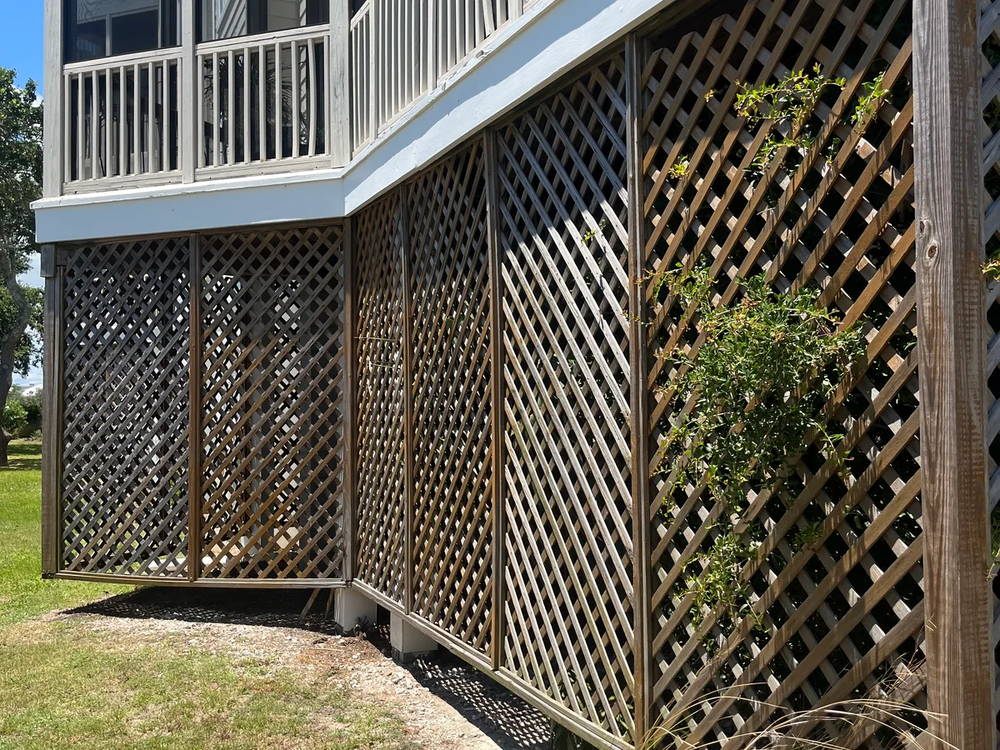
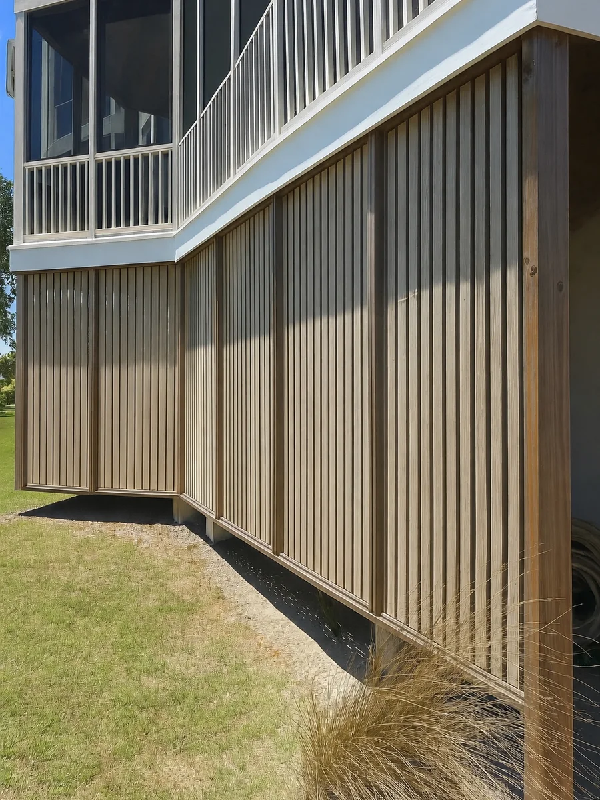
Exterior details repaired and upgraded for a cleaner, more complete finish.
Get Inspired
Modern composite decking keeps the warm look of wood while reducing the chores that come with exposed lumber.
Blog
3D modeling and high-end renderings help clarify scope, finishes, layout, and expectations before construction begins.
A clear scope, site information, and early coordination help keep permit assistance and drawing coordination moving efficiently.
Every project benefits from a practical review of existing conditions, budget, materials, schedule, and final construction goals.
Contact Us
Send a few details and we will help you understand the next step, whether that is a rendering, permit coordination, repair, remodel, or full build.